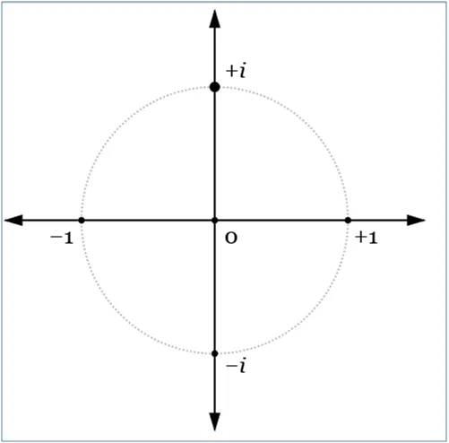
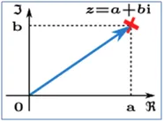

Ujemna powierzchnia pola - zagadka godna Sfinksa.
Ujemna temperatura to konwencja, ale ujemne pole, brzmi dziwnie. Oczywiście jest to możliwe w księgowości, gdzie ktoś miał 16 hektarów ziemi, stracił majątek wartości 25 ha i ma teraz minus 9 ha. W kraju gdzie zamiast waluty złotej byłaby gruntowa, to norma. Księgowy wie, że w kolumnie "winien" jest 9 ha, matematyk widzi minus 9 ha, niby to samo, ale... Księgowy nie zadaje pytań ile wynosi bok takiego pola a matematyk zadaje. Gdy kwadratowe pole jest równe 9 to jego bok to pierwiastek z 9 czyli 3. A co, gdy pole to minus 9?
Niestety w szkole powszechnej uczą, że z liczb ujemnych pierwiastka się nie wyciąga a szkoda, bo to ujemne pole ma boki, ale jakie? Gdyby to był kwadrat w ujemnej przestrzeni, czyli takiej przestrzeni wywróconej na lewą stronę, minus 3 na minus 3 to wychodzi plus 9. Czyli, nie tak. Zacznijmy od pola jednostkowego, czyli takiego o boku 1: pole 1 metr na metr to 1 metr kwadratowy, a my potrzebujemy minus 1 metra kwadratowego. Odpowiedzią jest odpowiedź na pytanie: jaka liczba podniesiona do kwadratu da minus 1. W wśród liczb rzeczywistych takiej liczby nie ma, a ujemne pole jest, co teraz? Nauka o tym przyszła do Europy z Azji setki lat temu, ale w szkołach powszechnych ciągle się upierają inaczej. Na profilach mat-fiz i wyżej uczą o tym, tajemnicy żadnej tu nie ma.
Okazało się, że poza liczbami rzeczywistymi są jeszcze inne liczby, ich oś przebiega prostopadle do osi powszechnie znanych liczb R, przecinają się oczywiście w punkcie zero . Pełna elegancja, jak to w matematyce.

Oś pozioma, to nasze ulubione liczby rzeczywiste R, a oś pionowa, to te inne liczby nazwane po łacinie "Imaginare", czyli wymyślone. Po polsku nieszczęśliwie przetłumaczone jako "urojone". Ich jednostką jest jedno 1i. Tu już z górki, takie 1i podniesione do kwadratu daje znane nam na osi poziomej minus 1, czyli i^2=-1. Zagadka pól ujemnych rozwiązana: Pole minus 9 jednostek ma bok równy 3i, bo 3i x 3i daje minus 9. Człowiek jest naprawdę wielki jak chce.

Na drugim grafie widać liczbę zespoloną "Z" jest w punkcie "z" i składa się z sumy "a" na osi "R" i "b" na osi "I". Nie można dodać "a" do "b" bo to są inne zwierzęta i światy, jabłek do baranów zasadniczo nie dodajemy. Tak naprawdę wszystkie liczby jakich używamy na co dzień to liczby zespolone, tylko ich wartość na osi pionowej jest równa zero i ją pomijamy.
Czy te liczby poza zagadką z ujemnym polem dłużnika są do czegoś potrzebne? Są niezbędne! Począwszy od elektryczności fizyka bez nich nie posunęłaby się na milimetr. Pozostańmy z faktem, że bez tych liczb nie da się nawet wystawić rachunku za prąd, co dziś jest wyjątkowo ważne.
Pamiętajcie, na pytanie o pierwiastek z minus 4 odpowiadamy: 2i!
Paweł Klimczewski